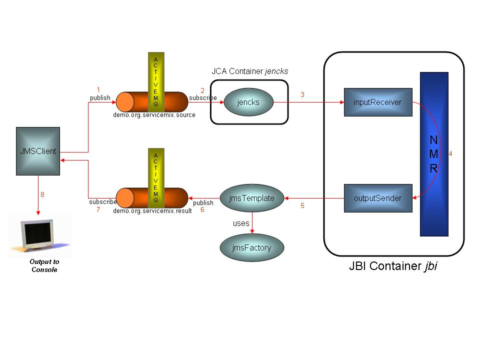

Overview of the ServiceMix 2.x JMS Binding ExampleThe following procedure describes how to run the JMS Binding example and provides details regarding what it does. For information on the business use case, please refer to: Use Case for JMS Binding
The source code for the JMS Binding example is located in the ServiceMix installation directory under the examples\jms-binding directory in the servicemix.xml file. It is recommended that you refer to the source code while reading this document.
Running the JMS Binding Example
Stopping the JMS Binding ExampleTo terminate the JMS Binding example, type "CTRL-C" in the command shell in which it is running and answer "y" to the "Terminate batch job (y/n)?" question.
How it WorksThe diagram below illustrates the flow of messages through the JMS Binding components:
JMS Binding Example Message Flow Diagram 
Typical output looks like the following: Loading ServiceMix from file: C:\exist\servicemix\servicemix-2.0.1\examples\jms--binding\servicemix.xml [SM:INFO] XBeanXmlBeanDefinitionReader - Loading XML bean definitions from file [C:\exist\servicemix\servicemix-2.0.1\examples\jms-binding\servicemix.xml] [SM:INFO] FileSystemXmlApplicationContext - Bean factory for application context [SM:org.xbean.spring.context.FileSystemXmlApplicationContext;hashCode=22540508]: org.springframework.beans.factory.support.DefaultListableBeanFactory defining beans[SM:jbi,jencks,broker, transactionContextManager,transactionManager,jmsFactory]; root of BeanFactory hierarchy [SM:INFO] FileSystemXmlApplicationContext - 6 beans defined in application context [SM:org.xbean.spring.context.FileSystemXmlApplicationContext;hashCode=22540508] [SM:INFO] CollectionFactory - JDK 1.4+ collections available [SM:INFO] CollectionFactory - Commons Collections 3.x available [SM:INFO] FileSystemXmlApplicationContext - Unable to locate MessageSource with name 'messageSource': using default [SM:org.springframework.context.support.Delegating MessageSource@a8c488] [SM:INFO] FileSystemXmlApplicationContext - Unable to locate ApplicationEventMulticaster with name 'applicationEventMulticaster': using default [SM:org.springframework.context.event.SimpleApplicationEventMulticaster@76cbf7] [SM:INFO] DefaultListableBeanFactory - Pre-instantiating singletons in factory [org.springframework.beans.factory.support.DefaultListableBeanFactory defining beans [SM:jbi,jencks,broker,transactionContextManager,transactionManager,jmsFactory]; root of BeanFactory hierarchy] [SM:INFO] SpringBrokerContainerFactory - Loading ActiveMQ broker from configuration: class path resource [SM:activemq.xml] [SM:INFO] ActiveMQBeanDefinitionReader - Loading XML bean definitions from class path resource [SM:activemq.xml] [SM:INFO] BrokerContainerImpl - ActiveMQ 3.2 JMS Message Broker (ID:el2tong-1857-1132035585799-1:0) is starting [SM:INFO] BrokerContainerImpl - For help or more information please see: http://www.logicblaze.com [SM:INFO] JDBCPersistenceAdapter - Database driver recognized: [SM:apache_derby_embedded_jdbc_driver] [SM:INFO] DefaultJDBCAdapter - Could not create JDBC tables; they could already exist. Failure was: CREATE TABLE ACTIVEMQ_MSGS(ID INTEGER NOT NULL, CONTAINER VARCHAR(250), MSGID VARCHAR(250), MSG BLOB, PRIMARY KEY ( ID ) ) Message: Table/View 'ACTIVEMQ_MSGS' already exists in Schema 'APP'. SQLState: X0Y32 Vendor code: 20000 [SM:INFO] DefaultJDBCAdapter - Could not create JDBC tables; they could already exist. Failure was: CREATE TABLE ACTIVEMQ_TXS(XID VARCHAR(250) NOT NULL, PRIMARY KE Y ( XID )) Message: Table/View 'ACTIVEMQ_TXS' already exists in Schema 'APP'. SQLState: X0Y32 Vendor code: 20000 [SM:INFO] DefaultJDBCAdapter - Could not create JDBC tables; they could already exist. Failure was: CREATE TABLE ACTIVEMQ_ACKS(SUB VARCHAR(250) NOT NULL, CONTAINER VARCHAR(250) NOT NULL, LAST_ACKED_ID INTEGER, SE_ID INTEGER, SE_CLIENT_ID VARCHAR(250), SE_CONSUMER_NAME VARCHAR(250), SE_SELECTOR VARCHAR(250), PRIMARY KEY ( SUB, CONTAINER )) Message: Table/View 'ACTIVEMQ_ACKS' already exists in Schema 'APP'. SQLState: X0Y32 Vendor code: 20000 [SM:INFO] DefaultJDBCAdapter - Could not create JDBC tables; they could already exist. Failure was: ALTER TABLE ACTIVEMQ_MSGS ADD EXPIRATION BIGINT Message: Column 'EXPIRATION' already exists in Table/View 'APP.ACTIVEMQ_MSGS'. SQLState: X0Y32 Vendor code: 20000 [SM:INFO] DefaultJDBCAdapter - Could not create JDBC tables; they could already exist. Failure was: ALTER TABLE ACTIVEMQ_MSGS ADD SENT_TO_DEADLETTER CHAR(1) Message: Column 'SENT_TO_DEADLETTER' already exists in Table/View 'APP.ACTIVEMQ_MSGS'. SQLState: X0Y32 Vendor code: 20000 [SM:INFO] JournalPersistenceAdapter - Opening journal. [SM:INFO] JournalPersistenceAdapter - Opened journal: Active Journal: using 2 x 20.0 Megs at: ..\var\journal [SM:INFO] JournalPersistenceAdapter - Journal Recovery Started. [SM:INFO] JournalPersistenceAdapter - Journal Recovered: 0 message(s) in transactions recovered. [SM:INFO] TcpTransportServerChannel - Listening for connections at: tcp://el2tong:61616 [SM:INFO] BrokerConnectorImpl - ActiveMQ connector started: TcpTransportServerChannel@tcp://el2tong:61616 [SM:INFO] BrokerContainerImpl - ActiveMQ JMS Message Broker (ID:el2tong-1857-1132035585799-1:0) has started [SM:INFO] JCAContainer - Jencks JCA Container (http://jencks.org/) has started running version: 1.1 [SM:INFO] SpringInitialContextFactory - Loading JNDI context from: class path resource [SM:jndi.xml] [SM:INFO] XBeanXmlBeanDefinitionReader - Loading XML bean definitions from class path resource [SM:jndi.xml] [SM:INFO] JBIContainer - Activating component for: [SM:container=defaultJBI,name=#SubscriptionManager#,id=#SubscriptionManager#] with service: null component: org.servicemix.jbi.nmr.SubscriptionManager@1315415 [SM:INFO] JBIContainer - ServiceMix JBI Container (http://servicemix.org/) name: defaultJBI running version: 2.0.1 [SM:INFO] JBIContainer - Activating component for: [SM:container=defaultJBI,name=inputReceiver,id=inputReceiver] with service: {http://servicemix.org/demo/}inputReceiver component: org.servicemix.components.jms.JmsInUsingJCABinding@1786a3c [SM:INFO] JCAConnector - Activating endpoint for activationSpec: ActiveMQActivationSpec{acknowledgeMode='Auto-acknowledge', destinationType='javax.jms.Topic', mess ageSelector='null', destination='demo.org.servicemix.source', clientId='null', subscriptionName='null', subscriptionDurability='NonDurable'} using endpointFacto ry: org.jencks.SingletonEndpointFactory@d0d12e[SM:transactionManager=org.apache.geronimo.transaction.context.GeronimoTransactionManager@1554233] [SM:INFO] ComponentContextImpl - Component: inputReceiver activated endpoint: {http://servicemix.org/demo/}inputReceiver : inputReceiver [SM:INFO] JBIContainer - Activating component for: [SM:container=defaultJBI,name=outputSender,id=outputSender] with service: {http://servicemix.org/demo/}outputSender component: org.servicemix.components.jms.JmsSenderComponent@1c6d11a [SM:INFO] ComponentContextImpl - Component: outputSender activated endpoint: {http://servicemix.org/demo/}outputSender : outputSender [SM:INFO] ActiveMQConnection - channel status changed: Channel: TcpTransportChannel: Socket[SM:addr=localhost/127.0.0.1,port=61616,localport=1863] has connected [SM:INFO] BrokerContainerImpl - Adding new client: ID:el2tong-1857-1132035585799-11:0 on transport: TcpTransportChannel: Socket[SM:addr=/127.0.0.1,port=1863,localport=61616] DetailsThe following table provides more details about the function of each component and bean in the servicemix.xml file.
1. jmsTemplate: JmsTemplate is a Spring component which hides the low level details when sending JMS messages. For additional information see: JmsTemplate Related DocumentationFor more information on the following topics please see:
. |